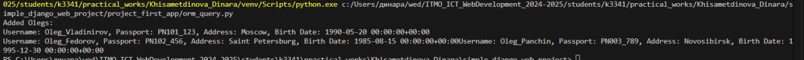

Django Web framework. Запросы и их выполнение.
Задача 2. Запросы на фильтрацию
- Где это необходимо, добавьте related_name к полям модели
- Выведете все машины марки “Toyota” (или любой другой марки, которая у вас есть)
- Найти всех водителей с именем “Олег” (или любым другим именем на ваше усмотрение)
- Взяв любого случайного владельца получить его id, и по этому id получить экземпляр удостоверения в виде объекта модели (можно в 2 запроса)
- Вывести всех владельцев красных машин (или любого другого цвета, который у вас присутствует)
- Найти всех владельцев, чей год владения машиной начинается с 2010 (или любой другой год, который присутствует у вас в базе)
Решение
Cкрипт предназначен для добавления в базу данных трёх пользователей (автовладельцев) с именем "Олег", уникальными паспортными данными, адресами и датами рождения. Скрипт учитывает временные зоны для полей с типом DateTimeField, что позволяет избежать ошибок при активной поддержке временных зон в Django.
1. Настройка Django
В начале скрипта происходит настройка Django, чтобы скрипт мог работать в контексте вашего проекта:
- BASE_DIR: Определяет корневую директорию проекта.
- sys.path.append(BASE_DIR): Добавляет корневую директорию в системные пути Python, чтобы импортировать модули проекта.
- os.environ.setdefault: Указывает файл настроек проекта Django.
- django.setup(): Инициализирует Django для работы со скриптом.
2. Создание данных для Олегов
Скрипт создаёт три экземпляра модели CarOwner с уникальными данными. Для поля birth_date используется утилита make_aware, чтобы создать корректные значения дат с временной зоной: Каждому "Олегу" присваиваются:
- Уникальное имя пользователя (username).
- Уникальный номер паспорта (passport_number).
- Уникальный адрес (home_address).
- Национальность (nationality).
- Дата рождения (birth_date).
- Для создания записей используется метод
create_user.
3. Функция добавления записей в базу данных
Основной функционал добавлен в функцию add_olegs, чтобы скрипт можно было легко переиспользовать. Эта функция:
- Создаёт данные для трёх пользователей с именем "Олег".
- Добавляет их в базу данных.
- Выводит данные в консоль для проверки.
- Для полей типа
DateTimeFieldиспользуется утилитаmake_awareизDjango, чтобы избежать ошибок с "наивными" датами.
4. Вот код скрипта:
import os
import sys
from datetime import datetime
from django.utils.timezone import make_aware
import django
BASE_DIR = os.path.dirname(os.path.dirname(os.path.abspath(__file__)))
sys.path.append(BASE_DIR)
os.environ.setdefault('DJANGO_SETTINGS_MODULE', 'simple_django_web_project.settings')
django.setup()
from project_first_app.models import CarOwner
def add_olegs():
birth_date_1 = make_aware(datetime(1990, 5, 20))
birth_date_2 = make_aware(datetime(1985, 8, 15))
birth_date_3 = make_aware(datetime(1995, 12, 30))
oleg1 = CarOwner.objects.create_user(
username="Oleg_Vladinirov",
passport_number="PN101_123",
home_address="Moscow",
nationality="Russian",
birth_date=birth_date_1
)
oleg2 = CarOwner.objects.create_user(
username="Oleg_Fedorov",
passport_number="PN102_456",
home_address="Saint Petersburg",
nationality="Russian",
birth_date=birth_date_2
)
oleg3 = CarOwner.objects.create_user(
username="Oleg_Panchin",
passport_number="PN003_789",
home_address="Novosibirsk",
nationality="Russian",
birth_date=birth_date_3
)
print("Added Olegs:")
for oleg in [oleg1, oleg2, oleg3]:
print(f"Username: {oleg.username}, Passport: {oleg.passport_number}, Address: {oleg.home_address}, Birth Date: {oleg.birth_date}")
if __name__ == "__main__":
add_olegs()
5. Вывод в консоли
